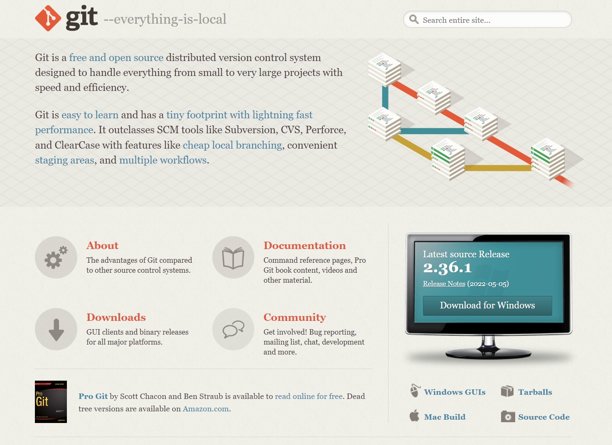

Hola (otra vez!!)
Hoy te quiero hablar de un tema, que considero, muy relevante: el código abierto.
En inglés al código abierto se le denomina open source. Y es que más que una forma de desarrollar código de forma colaborativa, es una filosofía o un movimiento. Es una lógica que supera solo a la producción del software mismo, sino que abarca valores del diseño descentralizado y solución de problemas de forma colectiva y abierta. Si deseas saber un poco más del open source, puedes revisar este link.
En lo personal, me encanta esta filosofía del open source. Y es que esta forma de trabajo puede abarcar no solo el desarrollo de código, sino que de otras industrias y áreas. La innovación tiene mucho de ésto, de desarrollar soluciones de forma colaborativa y abierta.
Hoy quiero que tu puedas contribuir al código abierto. Si!! Que ayudes a generar conocimiento colectivo. Entonces debes conocer un par de cosas. Una de éstas es el control de versiones GIT y la otra es alguna plataforma de repositorios remotos , como GitHub, GitLab o Bitbucket.
Pero cuando me puse a pensar en cómo explicarte a contribuir al código abierto, me parece relevante explicarte un paso antes. Y es que para que puedas hacer estas cosas, debes conocer algo de GIT.
¿Qué es GIT?
En la web de Microsoft indican:
Git es un sistema de control de versiones distribuido, lo que significa que un clon local del proyecto es un repositorio de control de versiones completo. Estos repositorios locales plenamente funcionales permiten trabajar sin conexión o de forma remota con facilidad. Los desarrolladores confirman su trabajo localmente y, a continuación, sincronizan su copia del repositorio con la copia en el servidor. Este paradigma es distinto del control de versiones centralizado, donde los clientes deben sincronizar el código con un servidor antes de crear nuevas versiones.
Ya te contaré más sobre GIT en otros artículos. En esta oportunidad seré muy concreto. Te explicaré cómo instalar GIT en tu computador para que puedas empezar a contribuir a proyectos de código abierto lo antes posible.
Pasos para instalar GIT
Instalar GIT no es nada complejo. Es como cualquier programa que instalas. Básicamente es descargar el instalador y darle clic a “siguiente” muchas veces.
De todas formas, hace unos meses me tocó instalar GIT y tomé capturas de pantalla de cada paso. Te las dejo para que te sirvan de referencia.
Versión de GIT Puede que la versión que instales no sea la misma que muestro acá, pero la instalación no debería ser muy distinta.

Finalmente…
Si sigues los pasos, no deberías tener mayor dificultades para tener instalado GIT.
Eso es lo primero para empezar a contribuir al open source.
En el próximo artículo te explicaré de forma muy precisa, cómo hacer tu primera pull request, que es la forma por excelencia de contribuir a proyectos abiertos. Pero eso, lo veremos en detalle el mi próximo artículo.
Nos vemos!!! üòÅ